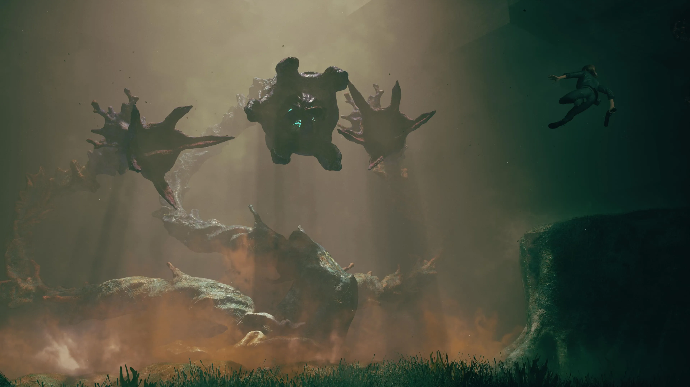

DI ANTARA KODE
DAN VISUAL.
Saya Daffa, mahasiswa Teknik Informatika di Universitas Suryakancana. Selain dunia teknologi, saya tertarik dengan cara sebuah gambar, potongan video, dan efek visual bisa membangun suasana.
Website ini menjadi tempat untuk memperkenalkan diri dan membahas hal-hal yang saya sukai, terutama game dan proses kreatif di balik tampilannya.
Baca profil lengkap ↗
BUKAN CUMA SOAL BERMAIN.
Game juga menarik untuk dilihat sebagai karya visual. Komposisi kamera, pencahayaan, dan desain dunianya bisa menjadi bahan untuk belajar.
Lihat catatan tentang game ↗